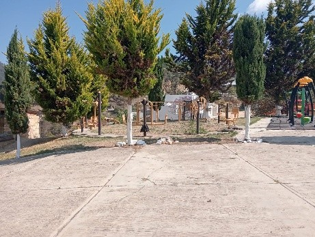
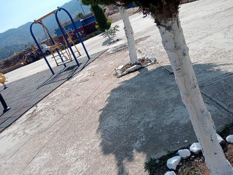
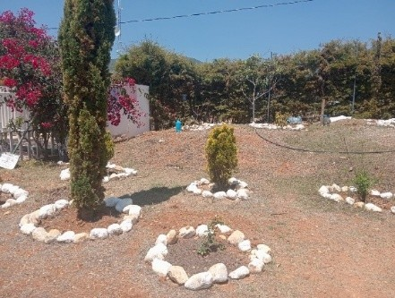

Después de analizar las diversas problemáticas de la institución, hacer un análisis del alcance que deseamos y los medios con los que contamos, se decidió que el propósito de nuestro PEC 2026 – 1 lleve por nombre: "UNA MANITA DE GATO A LOS ESPACIOS DEL EMSAD #45 Y LAS PRINCIPALES ÁREAS DE LA COMUNIDAD¨ CULTIVANDO VIDA Y VALORES EN SAN PABLO TIJALTEPEC" con la finalidad de embellecer los espacios verdes de nuestra institución y de la comunidad.
Plantación de árboles y limpieza de espacios escolares y comunitarios en diferentes areas verdes del municipio.


